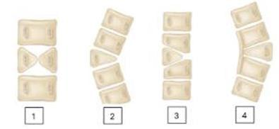
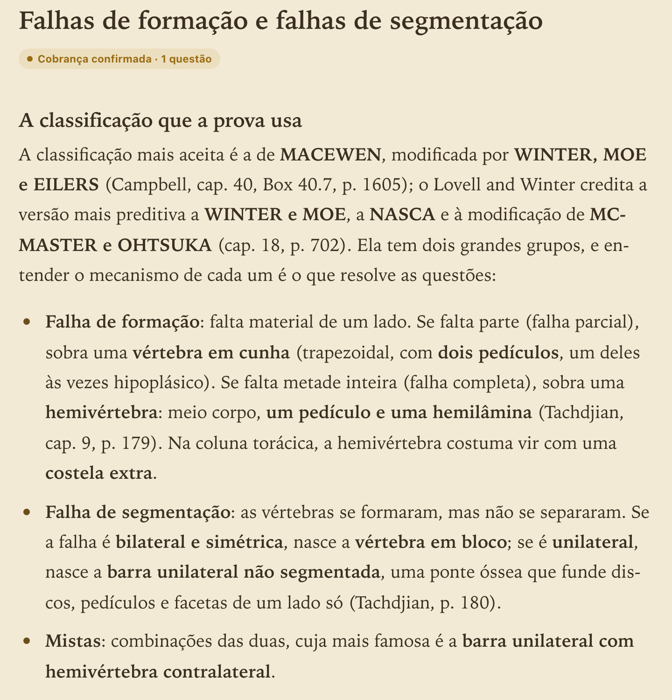
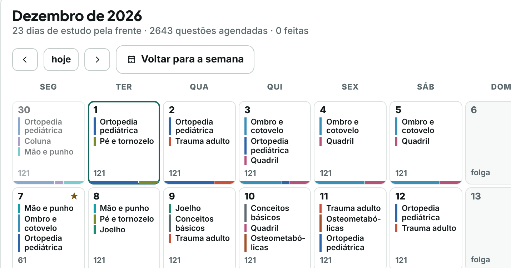
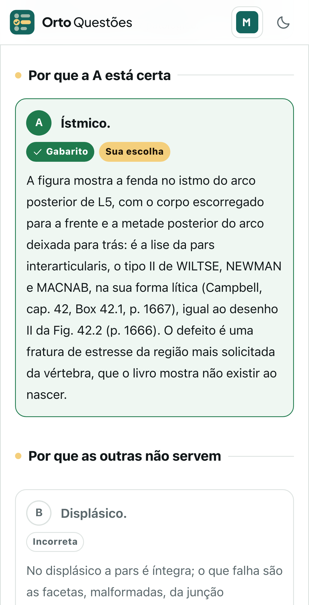

Pergunta da prova
Nas deformidades congênitas por defeito de segmentação e/ou formação, a figura a seguir que apresenta maior risco de progressão da escoliose é a:
Segundo o Lovell and Winter
O desenho 4 é o do canto superior direito da Fig. 18-5A (p. 703).
No próximo story: onde estudar isso



Até 20 questões comentadas por dia · ortoquestoes.com.br · Telas ilustrativas